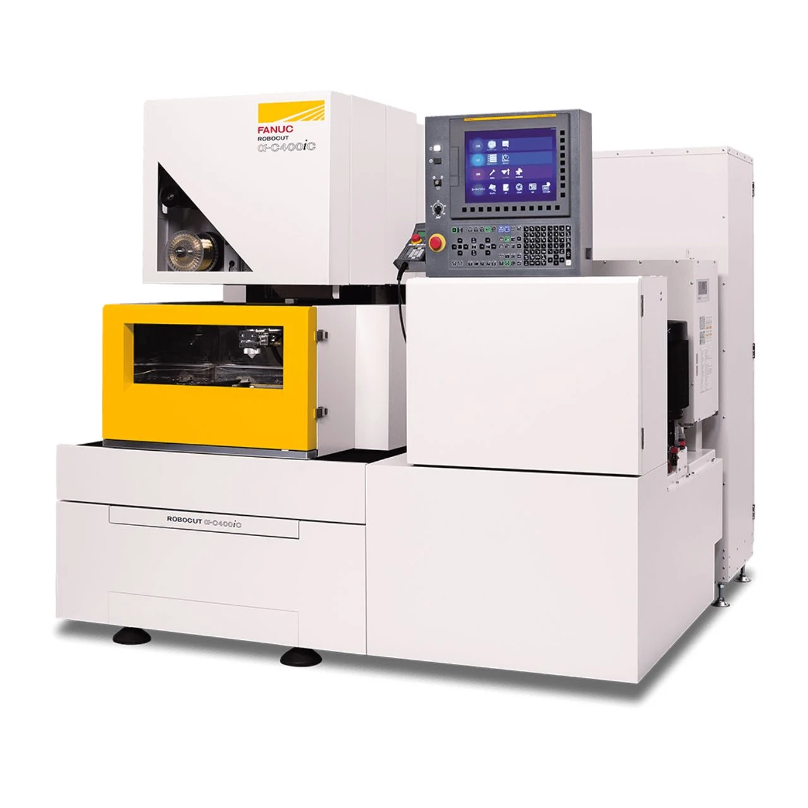

Máy cắt dây gia công tia lửa điện EDM Fanuc
Fanuc Wire Electrical Discharge Machine (Wire EDM) Model / Số hiệu: Xuất xứ / Origin: Model: Fanuc Robocut α -C400iC | Code: JWRI-16 Nhà sản xuất: Fanuc Corporation (Xuất xứ: Nhật Bản) / ODA JICA 2025 Thông số kỹ thuật Technical S…
Đọc chi tiết ↗